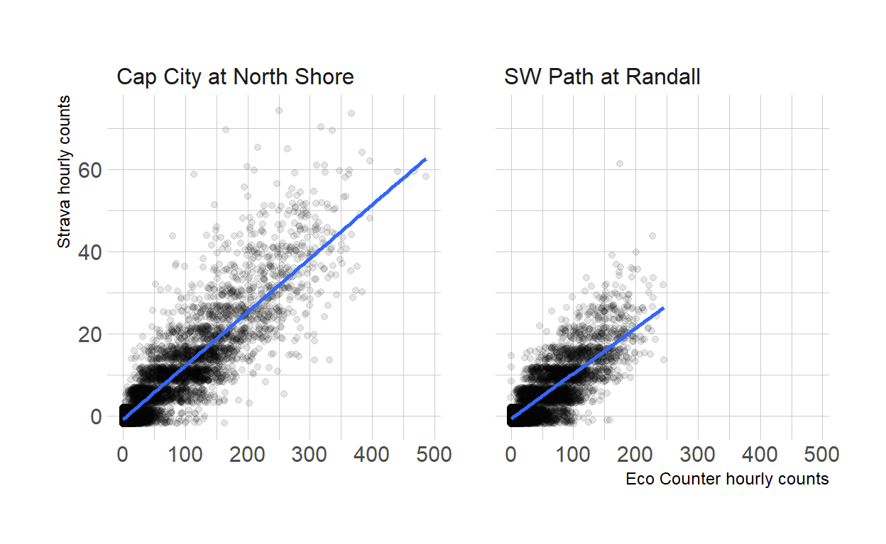
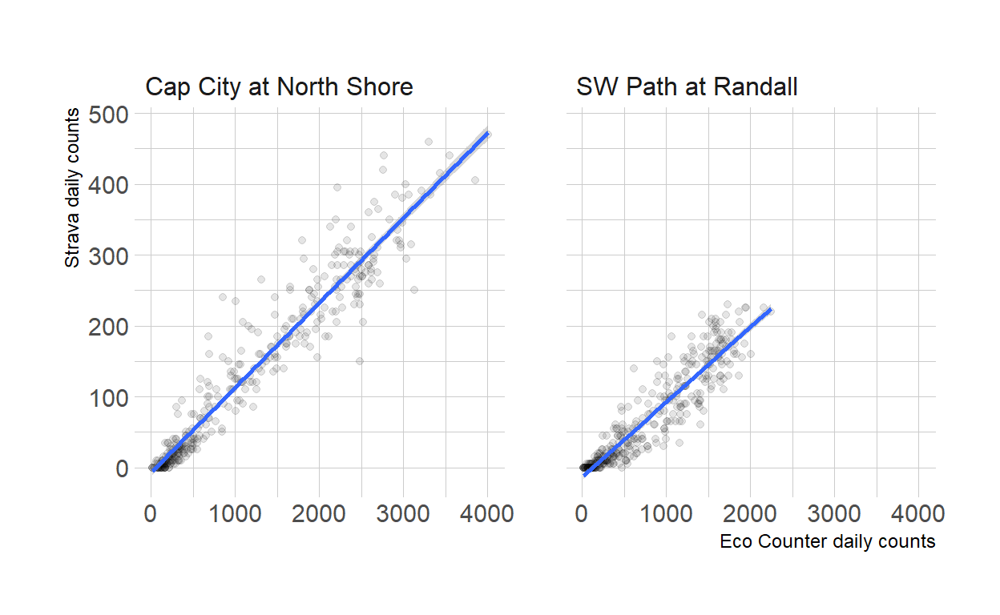

Can Strava Metro data in Madison be a good indicator of overall bike traffic?
This post is inspired by a line in this great paper about level of traffic stress and Strava counts.
Strava counts were correlated with City of Toronto bicyclist counts at intersections for the period of July to September 2022 (City of Toronto 2022). The correlation was similar to results in other Canadian cities (R2 of 0.69, Figure S2). (Imrit et al. 2024)
I am obsessed with bike counts and therefore was curious what the correlation would be for the two permanent counters in Madison. The counters, made by Eco Counter, use loop detectors in the bike path surface and are fairly reliable in counting all bikes. The latest Eco Counter full year of ridership I have data for is 2022. I visually matched the location of the two counters to two Strava segments (or “edges”) and downloaded hourly 2022 data for those segments.
Data from the counters and from Strava Metro require a bit of cleaning.
counts_2022 <- readxl::read_excel("data/EcoCounter_2022.xlsx", skip = 3,
col_names = c("time_count", "count_cap_city", "count_sw_path")) |>
mutate(date_count = floor_date(time_count, unit = "hours")) |>
summarize(across(starts_with("count_"), ~ sum(.x, na.rm = T)), .by = date_count) |>
pivot_longer(cols = starts_with("count_"), names_to = "location", values_to = "count_hourly") |>
mutate(location = case_when(location == "count_cap_city" ~ "Cap City at North Shore",
location == "count_sw_path" ~ "SW Path at Randall"),
dayofweek = wday(date_count),
weekendind = ifelse(dayofweek %in% c(1:5), "weekday", "weekend"),
month_count = month(date_count, label = T, abbr = T))
strava_cap_city <- read_csv("data/cap_city_strava_hourly.csv") %>%
mutate(location = "Cap City at North Shore")
strava_sw_path <- read_csv("data/sw_path_strava_hourly.csv") %>%
mutate(location = "SW Path at Randall")
counts_cap_city <- strava_cap_city %>%
full_join(counts_2022 %>% filter(location == "Cap City at North Shore"), by = join_by(hour == date_count, location))
counts_sw_path <- strava_sw_path %>%
full_join(counts_2022 %>% filter(location == "SW Path at Randall"), by = join_by(hour == date_count, location))
all_counts_2022 <- rbind(counts_cap_city, counts_sw_path) %>%
mutate(strava_count = replace_na(total_trip_count, 0))Now we can plot the counts. We’ll also add a line representing a simple linear regression.
all_counts_2022 %>%
ggplot(aes(count_hourly, strava_count)) +
geom_jitter(alpha = .1)+
facet_wrap(~ location) +
labs(x = "Eco Counter hourly counts",
y = "Strava hourly counts") +
hrbrthemes::theme_ipsum_rc() +
geom_smooth(method = "lm")
The Strava data is rounded into buckets of 5. The plot adds some jitter to prevent overplotting, but you can still see the horizontal bands along the 5-count increments. The overall correlation between the counts appears to be very high, and looking at the x and y axis labels, we see that Strava hourly counts are much lower than the Eco Counter ones. Here’s a summary table for the correlation between the counts and total numbers and percentages.
all_counts_2022 %>%
group_by(location) %>%
summarize(cor = (cor(count_hourly, strava_count)),
total_count_strava = sum(strava_count),
total_count_eco = sum(count_hourly),
pct_strava = total_count_strava/total_count_eco) %>%
gt() %>%
tab_header(title = md("Comparing _hourly_ counts between Strava and Eco Counter"),
subtitle = "Two locations in Madison, Wisconsin") %>%
tab_spanner(columns = c(total_count_strava, total_count_eco),
label = "Total count 2022") %>%
cols_label(
location = "Counter/segment location",
cor = "Correlation (r)",
total_count_strava = "Strava",
total_count_eco = "Eco Counter",
pct_strava = "Strava/Eco Counter counts"
) %>%
fmt_percent(columns = pct_strava, decimals = 0) %>%
fmt_number(columns = cor, decimals = 2) %>%
fmt_auto(columns = starts_with("total_count"))| Comparing hourly counts between Strava and Eco Counter | ||||
| Two locations in Madison, Wisconsin | ||||
| Counter/segment location | Correlation (r) | Total count 2022 | Strava/Eco Counter counts | |
|---|---|---|---|---|
| Strava | Eco Counter | |||
| Cap City at North Shore | 0.90 | 50,235 | 440,717 | 11% |
| SW Path at Randall | 0.85 | 26,710 | 298,947 | 9% |
Indeed, the correlation is very strong (as a rule of thumb, a correlation of over 0.75 is considered strong), and Strava counts represent about 10% of trips counted by the Eco Counters over the year.
All these numbers compare hourly counts. Hourly counts are important for some purposes (e.g. identifying peak use of a facility, or distinguising between commuting and recreational riding). Maybe more commonly used, however, are daily counts—in traffic engineering the “Average Daily Traffic” (ADT) is the main measure of vehicle traffic volumes. Daily counts are also what is being used in the (Imrit et al. 2024) article mentioned at the beginning of the article. So we’ll aggregate the data to the daily count and create graphs and correlations again.
all_counts_2022 %>%
mutate(day = floor_date(hour, unit = "days")) %>%
group_by(day, location) %>%
summarize(daily_eco = sum(count_hourly),
daily_strava = sum(strava_count)) %>%
ggplot(aes(daily_eco, daily_strava)) +
geom_point(alpha = .1)+
facet_wrap(~ location) +
labs(x = "Eco Counter daily counts",
y = "Strava daily counts") +
hrbrthemes::theme_ipsum_rc() +
geom_smooth(method = "lm")
all_counts_2022 %>%
mutate(day = floor_date(hour, unit = "days")) %>%
group_by(day, location) %>%
summarize(daily_eco = sum(count_hourly),
daily_strava = sum(strava_count)) %>%
ungroup() %>%
group_by(location) %>%
summarize(cor = (cor(daily_eco, daily_strava))) %>%
gt() %>%
tab_header(title = md("Comparing _daily_ counts between Strava and Eco Counter"),
subtitle = "Two locations in Madison, Wisconsin") %>%
# tab_spanner(columns = c(total_count_strava, total_count_eco),
# label = "Total count 2022") %>%
cols_label(
location = "Counter/segment location",
cor = "Correlation (r)") %>%
fmt_number(columns = cor, decimals = 2)| Comparing daily counts between Strava and Eco Counter | |
| Two locations in Madison, Wisconsin | |
| Counter/segment location | Correlation (r) |
|---|---|
| Cap City at North Shore | 0.96 |
| SW Path at Randall | 0.93 |
The correlation between the two types of counts is now even higher, in both locations. The 0.69 number mentioned by Imrit et al. is actually not the correlation but the R2 value of a linear model. Without going into too much detail, they both are a measure of the direction and strength of relationship between two values. For the sake of completeness, let’s calculate the R2 values for daily counts in a simple regression model for each of the locations:
all_counts_2022 %>%
mutate(day = floor_date(hour, unit = "days")) %>%
group_by(day, location) %>%
summarize(daily_eco = sum(count_hourly),
daily_strava = sum(strava_count)) %>%
ungroup() %>%
filter(location == "SW Path at Randall") %>%
with(lm(daily_eco ~ daily_strava)) %>%
broom::glance() %>%
select(r.squared)# A tibble: 1 × 1
r.squared
<dbl>
1 0.860all_counts_2022 %>%
mutate(day = floor_date(hour, unit = "days")) %>%
group_by(day, location) %>%
summarize(daily_eco = sum(count_hourly),
daily_strava = sum(strava_count)) %>%
ungroup() %>%
filter(location == "Cap City at North Shore") %>%
with(lm(daily_eco ~ daily_strava)) %>%
broom::glance() %>%
select(r.squared)# A tibble: 1 × 1
r.squared
<dbl>
1 0.923For the SW Path at Randall, the R2 is 0.86; and for the Cap City at North Shore location it is 0.92! That is, much higher than the 0.69 found in Toronto.
We cannot know if these numbers would look different in other places in the city, but at least on these two major bike paths, the Strava numbers are a great indicator for overall bike usage. Often when you mention Strava data, people will point that Strava users and usage are not representative of the population at large. Which in many cases certainly is the case. But as we have seen in these two particular locations, Strava data appears to be very well aligned with loop counter data.
This report includes aggregated and de-identified data from Strava Metro. Data for the Eco Counters was provided to me by the City of Madison.
For attribution, please cite this work as
Kliems (2024, Jan. 19). Harald Kliems: Comparing counts from Strava Metro and loop counters. Retrieved from https://haraldkliems.netlify.app/posts/2024-01-19-strava-vs-eco-counter/
BibTeX citation
@misc{kliems2024comparing,
author = {Kliems, Harald},
title = {Harald Kliems: Comparing counts from Strava Metro and loop counters},
url = {https://haraldkliems.netlify.app/posts/2024-01-19-strava-vs-eco-counter/},
year = {2024}
}